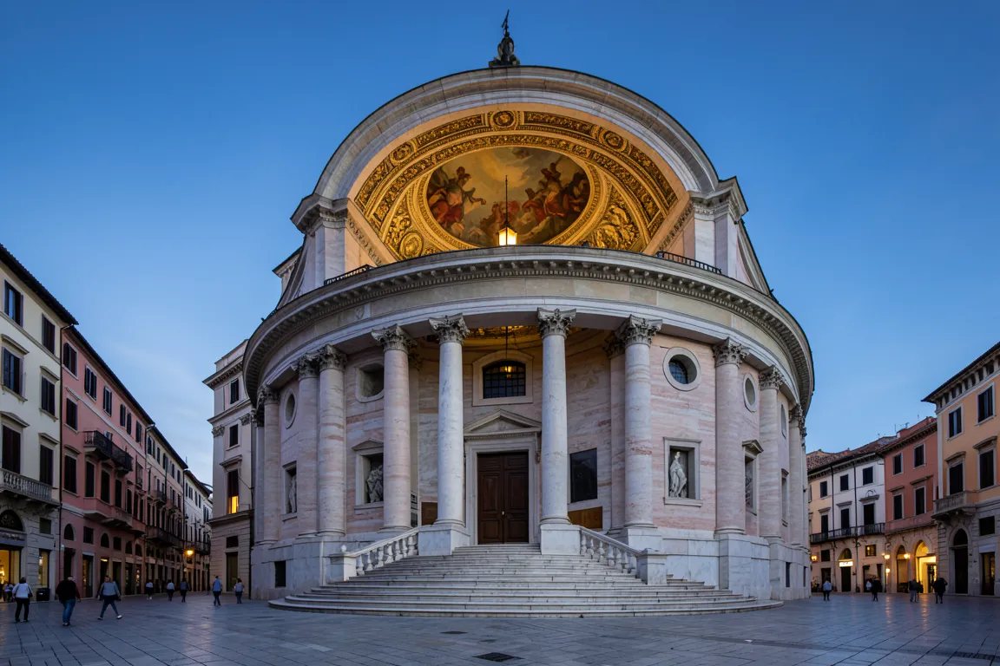

architecture · 17th–mid 18th century · also: Roman Baroque, High Baroque, Austrian Baroque
Classical orders bent into curves: oval plans, convex and concave fronts, doubled columns and light that drops from hidden windows. Bernini, Borromini and the court architects built it as theatre to move the viewer.

Core thesis
Architecture should move the viewer: curve, depth, light and ornament make one dramatic effect, in the service of church and crown.
Design principles
Replace the circle and the square by the oval, and the straight front by a convex or concave wall of 1 to 3m curve depth.
Use the giant order, a column or pilaster of 2 to 3 storeys, and double or group the columns in pairs.
Break the entablature and the pediment forward and back at each bay, so that the cornice casts a deep shadow.
Light the focal point from a hidden source: a lantern, a concealed window or a gilded burst above the altar.
Lead the eye on a strong axis, with a series of rooms or a stair that grows in richness toward a climax.
Unite architecture, sculpture and painting: a ceiling fresco, stucco figures and gilding in one surface.
Anti-patterns
Flat, calm fronts that keep every part in one plane
Plain unornamented walls with no sculpture or fresco
Pointed Gothic arches or thin skeletal structure
Strict small-module grids with no curve
Even, shadowless light from large plain windows
A single order stacked in equal bays with no central emphasis